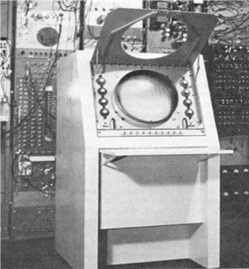
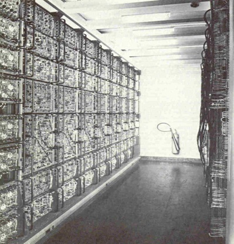
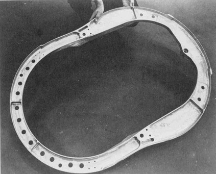
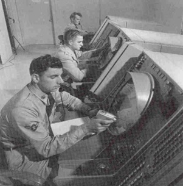
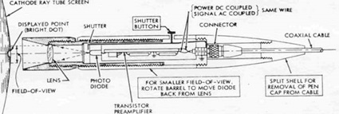
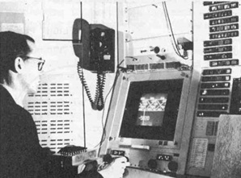
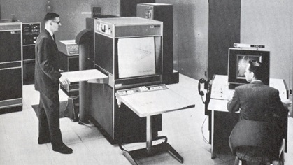
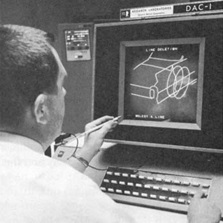

第3章：计算机辅助设计发源地麻省理工学院
在第二次世界大战期间，麻省理工学院成为美国华盛顿军事机构的重要研究和开发合作伙伴之一。其中之一是由戈登·布朗教授于1940年创立的伺服机构实验室，他最终成为学院工程学院的院长。杰伊·福瑞斯特是随后发生的重要参与者，他于1939年以研究生的身份入读麻省理工学院，并很快参与了实验室的努力，开发反馈控制机制，用于军事设备，例如舰载雷达和炮座。在战争期间，这一活动使福瑞斯特前往南太平洋，在航空母舰列克星敦上花费时间，帮助修复原型雷达系统。在福瑞斯特登上列克星敦号期间，该舰遭到鱼雷攻击，但没有被击沉。
旋风——关键技术的试验平台
1944年，伺服机械实验室（通常称为伺服实验室）开始开发计算机系统，以支持海军飞机稳定性和控制分析仪（ASCA）项目，合同金额为75,000美元。目标是创建一款通用的飞行模拟器，以取代为每种飞机类型构建定制飞行模拟器的当前做法。当时，大多数仿真工作涉及模拟计算机，这也是ASCA的最初计划。到1946年，福雷斯特（Forrester）确信，类似于最近在宾夕法尼亚大学完成的ENIAC计算机的数字计算机将为飞机模拟提供更好的平台。这导致建立旋风计划，目标是构建麻省理工学院的第一台数字计算机——旋风I号。从来没有旋风II号，大多数对I号的引用在1950年左右被删除。

几年内，ASCA的工作被搁置，该团队的重点是建造世界上最快、最可靠的数字计算机。旋风对计算机辅助设计（CAD）技术的发展具有多方面的重要性。由于最初的意图是将这台计算机用作飞行模拟器的控制元件，因此从一开始就设计它能够进行实时操作。反过来，这导致利用交互式设备与计算机进行操作员通信。其中一种设备是阴极射线管（CRT）显示控制台，如图3.1所示。这种对显示技术的早期兴趣最终将导致麻省理工学院林肯实验室开发了更先进的图形终端，作为下面描述的TX-0和TX-2计算机系统的一部分。
在开发旋风计算机时，福雷斯特和他的助手罗伯特·埃弗里（Robert Everett）需要解决两个主要问题。第一个问题是如何使用数千个相对不可靠的真空管实现更高的系统可靠性。他们提出的概念是使用边际检测技术，工程师可以变化系统的电压以检测即将失效的真空管。这增加了计算机的复杂性，但使旋风计算机能够长时间运行而没有问题。
第二个问题是计算机的主存储器应该使用什么。ENIAC只有20个单词的内存，这是用于系统其余部分的相同真空管制造的。这对旋风计算机的预期目标完全不足够。设计目标是拥有2,048个16位单词的内存。最初的系统配置使用静电存储管。这些管子证明制造难度大，旋风计算机最初只有256个单词的内存。内存后来增加到1,024个单词。在1949年初，福雷斯特开始尝试磁芯存储器。虽然这个概念相对简单，但找到具有他们所寻找的磁性质的适当材料花费了几年时间。回顾历史，旋风设计团队开发磁芯存储器可能是它最重要的成就，即使我们更感兴趣的是它的图形能力。
1947年，负责Whirlwind计划的Servomechanisms实验室团队成为了该实验室的电子计算机部门，1951年该部门独立出来成为麻省理工学院数字计算机实验室，不再隶属于Servo实验室。在这些年里，福雷斯特一直担任Whirlwind项目主任和计算机实验室主任，埃弗雷特则担任副主任。在这个故事中扮演重要角色的其他关键人物包括Ken Olsen（数字设备公司创始人）、Norm Taylor（ITEK公司副总裁，领导该公司开发的电子绘图机EDM，参见第6章）以及Charles Adams和Jack Gilmore（Adams Associates的联合创始人，对EDM的开发起了关键作用）。福雷斯特随后成为麻省理工学院斯隆管理学院的教授，而埃弗雷特最终成为MITRE公司的总裁。

如图3.2所示，Whirlwind是一个具有物理压迫感的机器。它占据了Barta大楼三楼的2500平方英尺的空间，位于麻省理工学院主校区的北部。机器的电路由12500个真空管组成，消耗了150,000瓦特的电力。Whirlwind是一系列大型机架组装而成的，这些机架提供了对机器电路的易于访问性，方便对这台基本上是研究机器进行维护和修改。当时位于波士顿的Sylvania Electric Products Company制造了大部分的物理设备。很难确定Whirlwind何时开始运行。出于实际目的，最好的日期可能是1951年3月，尽管在1949年第三季度就进行了一些有成果的工作。
计算性能在当时非常出色。该系统具有两个时钟速度，1 MHz和2 MHz，每秒可执行20,000个操作。虽然许多早期计算机按串行方式处理数据，但Whirlwind以并行方式在内部传输数据和指令字–每次同时处理16位。该计算机能够支持最多32个不同的命令，但只实现了27个。虽然按现今标准看很慢，但Whirlwind直到1959年被报废前一直为麻省理工学院社区提供有价值的计算服务。在闲置了几年后，它于1963年移交给马萨诸塞州West Concord的Wolf Research & Development，一直运行到20世纪70年代初才被永久关闭。总体而言，海军和空军在Whirlwind的开发上花费了约500万美元。正如Redmond和Smith在《Project Whirlwind: The History of a Computer Pioneer》中详细描述的那样，Whirlwind开发团队与海军之间的关系经常非常不和谐，在某些时候海军几乎关闭了该项目的资金支持。如果它这样做了，计算机辅助设计(CAD)行业的历史可能会与现在有很大不同。
在大多数20世纪50年代，围绕Whirlwind的努力都集中在支持空军的半自动地面环境(SAGE)防空系统上。实际的SAGE计算机于1958年开始部署，由IBM制造，采用了从Whirlwind派生的设计概念。SAGE项目的副产品是麻省理工学院林肯实验室的成立，位于MA州贝德福德市，距离学院剑桥校园约15英里。林肯实验室对于这个故事很重要，因为它是TX-0计算机的初始所在地，这是第二代Whirlwind系统，以及TX-2计算机的永久所在地。后者在整个20世纪60年代广泛用作图形研究平台。计算机实验室成为林肯实验室的第6部分，福瑞斯特在1951年至1956年期间担任其主任。埃弗里特在那时接手了这个部门，并管理了该部门，直到1959年他离开帮助创立了MITRE公司。
Forrester非常敏锐地看到了计算机技术发展的方向。早在1948年，他就描述了类似于20世纪60年代的分时共享方法和今天互联网的远程计算机访问。
使用 Whirlwind 进行图形编程
早期计算机的编程是在机器的二进制指令和内存寻址结构的最低层次上完成的。一些研究中心意识到可以开发出更好的技术。其中一个团队是由 Charles Adams 领导的 Whirlwind 编程团队。Adams 在 1952 年计算机协会的会议上发表了一篇论文，其中他说：“理想情况下，一个过程应该是将数学公式和初始条件简单地用文字和符号写下，然后由计算机直接解决，而不需要进一步的编程。”
根据赫尔曼·戈德斯坦的说法：
“在同一次会议上，约翰·卡尔描述了麻省理工学院的编程工作。很明显，Whirlwind 团队非常关注程序员的需求。Adams 和 J. T. Gilmore 扩展了 Wilkes、Wheeler 和 Gill 的想法，从而衍生出了一种符号地址过程的思想，这似乎是 IBM 的 Rochester 和他的同事独立创建的。Whirlwind 团队还在解释性代数编码系统的开发方面处于领先地位……”
从最早的时候起，Whirlwind 就连接了某种形式的图形显示设备。最早的设备只能显示256个点的光。随后扩展到4096个点或64乘64矩阵。远远少于当代图形系统所使用的1280乘1024或更高的分辨率。Adams编写了一个简短的程序，用于在显示屏上显示一个弹跳的球。这是通过解三个同时的微分方程来完成的。稍后，可能是在1950年末，Adams和Gilmore写了第一个电脑游戏。它包括尝试通过改变计算的频率使球穿过地板上的一个洞。与此同时，Everett开发了第一个光枪，光笔的前身，可用于识别CRT上特定的显示点。在Whirlwind上进行的第一个工程设计应用程序可能是由硕士论文学生Dom Combelec完成的，他编写了一个程序来帮助设计天线阵列。
数控机床和APT的发展
伺服机构实验室在战时控制反馈工作中使用了利用连续或模拟信号来控制雷达天线和高射炮等设备的军事装备。到1949年，理论基础正在发展，以使用数字或脉冲数据来控制伺服机构。在那年的春天，戈登·布朗接到密歇根州特拉弗斯城帕森斯公司航空事业部的约翰·T·帕森斯小组的电话。帕森斯正在寻找一种能够接受数字数据并驱动机床的设备。
当时加工复杂曲面的常见做法是钻密集的孔到预定深度，然后通过仔细加工表面或手工打磨来完成零件。空军正开始开发一系列高速战斗机，需要更好的方法来加工高精度零件。帕森斯已经与空军签订了一份合同，以开发一台机器来完成此项任务，但他缺乏完成该项目的技术资源。结果是帕森斯、空军和麻省理工学院之间的三方安排。
最初的伺服实验室项目负责人是威廉·皮斯，詹姆斯·麦克唐纳担任助手。他们很快意识到，与仅钻密集孔的技术相比，综合的多轴加工技术更为优越。最初的想法是，每个工具移动的增量都将读取一个数据记录（计划使用穿孔卡输入此数据）。由于定位分辨率为0.0005英寸，这将需要比当时任何读卡器都要快得多的卡片读取器，以及即使是最简单的零件也需要大量的穿孔卡。在麻省理工学院演变出的概念是为机器提供一个命令，让它到达三维空间中的特定点，然后具有控制器机制，可以向控制机床每个轴的电动机提供脉冲数据。皮斯和麦克唐纳开发的基本思想基本上是今天的做法。
这些概念的实际实现始于1950年7月。在麦克唐纳的领导下，新的伺服实验室成员之一赫伯特·格罗西蒙开始参与工作。美国空军向伺服实验室提供了一台三轴辛辛那提铣床，随后为每个轴装备了适当的控制装置，并与真空管数控控制器相连接。加工指令不再使用穿孔卡片而是从打孔纸带中读取。实验机床在1952年3月投入使用。在MIT举行了第一个数控机床的正式发布会，时间是1952年9月15日至17日。至此，美国空军为伺服实验室开发数控机床的总成本仅为36万美元。
早期数控机床的控制带制作是一个耗时的手动过程。到第一个数控机床发布时，人们意识到，除非制作这些带的过程可以得到大幅度改善，否则使用数控的总体经济效益将会受到影响。在Whirlwind上，约翰·H·鲁尼恩通过子程序技术尝试自动化该过程。随后，阿诺德·西格尔开发了一种程序语言，用于编程机床。使用西格尔的软件，一个手动编程需要8小时的零件，在Whirlwind上只需不到15分钟即可完成。
1956年，Douglas Ross开始了开发更高级的零件编程解决方案的重要工作。在实验室内成立了一个计算机应用小组，Ross担任负责人，约翰·沃德被指派担任自动程序化工具（APT）系统开发的项目工程师。沃德后来被唐纳德·克莱门特替换为永久APT项目管理员。
APT是一个相当重要的项目，它涉及许多大型工业公司的广泛参与，特别是那些在航空航天工业中，在航空工业协会（AIA，现称航空航天工业协会）的支持下。这些公司不仅提供了资金支持，而且积极参与了APT软件的开发。
他们开发的一种方法是将数控（NC）信息以通用形式准备好，然后对特定的机床和控制器的组合进行后处理。到了1950年代中期，很明显，机床制造商对自己制造控制器不感兴趣，而这些控制器将由更具有电子领域专业知识的公司如Bendix和General Electric制造。
Ross认为Siegel的方法并不够完善，需要一种更综合的零件编程语言。他想要一种使用类似英语语句的方法进行零件编程，并且可以由非计算机程序员完成的工具。他在APT上的工作使他长期致力于开发工具，以弥合工程师和计算机之间的差距。根据J. Francis Reintjes的说法：“他将编程视为一种人与计算机之间的相互关系过程，在这个过程中，通用计算机会通过使用一组特殊程序，以处理任何手头问题而变成一种特殊目的机。然后人类将以对话式的方式与计算机进行反复交流。”
Servo Lab团队在Ross和行业合作伙伴的帮助下开发的APT的第一个版本是一个利用曲线边界线的二维实现，被称为2D-APT-II。九家航空公司和IBM与MIT一起在这个实现上工作。大多数早期的编程工作是在所有飞机制造商都可以访问的IBM 704计算机上完成的。MIT还没有安装它订购的704，其工作仍在Whirlwind上进行。2D-APT-II准备在1958年4月30日进行初始现场测试。这是一个相当复杂的应用程序，文档共有6卷，总共达到517页。

2D-APT-II完成后，伺服实验室开始逐步退出APT开发并转向更普遍的CAD开发。Ross和他的团队继续研究一些核心数学例程，但最初的大部分开发移交给了AIA的中央项目组在圣迭戈，并于1962年移交给伊利诺伊理工研究所（今天称为Alion Science and Technology），后者接管了APT的长期支持-随后称为APT-III。在Dr. S. Hori的领导下，IITRI继续通过1970年代中期提供APT支持。图3.3展示了使用APT III编程NC铣床加工的早期铝合金锻件。这个单一的加工件不仅取代了250多个钣金部件的总成，而且得到的航空部件更加强壮，更加可靠，成本更低。
APT作为国际标准的工作始于1963年，在USASI X3.4.7小组的支持下进行。由于APT是在假定用户组织能够将公司或项目特定的功能添加到核心软件的前提下实施的，因此制定标准是一项复杂的任务。如果包括了每一个可能的功能，标准将会难以处理，甚至对许多计算机公司来说可能是不可能实现的。另一方面，过于有限的子集也同样不切实际。解决方案是定义五个子集，其中每个子集都包含较低级别子集的所有特性。五个级别是：
- 多轴轮廓系统
- 3D轮廓系统
- 最小轮廓系统
- 高级点到点系统
- 最小系统
在不同的组中实现的特定专用功能集被归类为“模块功能”，用户能够将模块功能插入到核心子集中。截至1968年，X3.4.7小组正在考虑25个这样的模块功能。
APT最终被实现在许多大型主机计算机系统上。其中许多不同版本包括IBM开发的APT 360，Control Data Corporation开发的6400/6600 APT和University Computing Corporation开发的UCC APT。一些公司，包括通用电气，开发了自己的APT内部实现。虽然这些不同的实现基本上符合APT标准，但每个版本都有自己的特点。在1970年代末，IBM为370系列计算机推出了一种名为APT-AC的新版本，其中AC代表高级轮廓。今天，可能仍然有数百个组织，主要是航空航天公司和大型机械加工厂，使用APT，主要的支持来源于Austin NC公司，这个团队曾经是University Computing的APT支持团队。最新版本运行在UNIX和Windows操作系统下。
转向新的研究方向
麻省理工学院早期的伺服机构实验室的一个分支是动态分析与控制实验室（DACL），该实验室致力于研究和开发空对空导弹的组件。1952年，罗伯特·W·曼（Robert W. Mann）作为设计部门的负责人加入了DACL。曼在战前曾在贝尔电话实验室工作过草图师，在美国陆军通讯兵役结束后重返贝尔实验室。他利用《退伍军人教育法》的资助，于四年内完成了麻省理工学院机械工程学士和硕士学位的学习。在担任DACL设计管理职务不久后，曼被邀请加入麻省理工学院机械工程系担任设计课程的教学工作。
正如读者在接下来的页面中所看到的，计算机辅助设计（CAD）行业的历史充满了个人关系和在麻省理工学院发生的偶然相遇。曼的本科室友是肯尼斯·奥尔森（Kenneth Olsen），他是数字设备公司的创始人，曾与福瑞斯特（Forrester）一起开发Whirlwind的磁心存储器。奥尔森负责开发Whirlwind的一种专门变体，称为内存测试计算机。曼的未来妻子玛格丽特·弗洛伦科特（Margaret Florencourt）也是Whirlwind团队的一员。
在麻省理工学院机械工程系内，1953年发生了重大变化。当时，学院重新调整了本科课程，取消了所有大一学生必修的绘图和描述几何学课程要求。教授这门课程的教师，包括史蒂文·安森·库恩斯（Steven Anson Coons），被合并到该系的设计部门。库恩斯在1932年获得了麻省理工学院的学士学位，并在钱斯-沃特飞机公司担任数学家和设计师多年。库恩斯最终因其开发的曲面定义概念而在CAD行业内享有盛誉。
在MIT推动CAD的发展
1959年1月，来自电子系统实验室（前身为伺服系统实验室）和机械工程系设计部门的人员举行了一次非正式会议，得出结论：数字计算机可以被用于自动化工程设计活动。电子系统实验室与空军的APT开发和支持合同将在约一年后到期，Reintjes和他的员工急于找到新的领域来投入资源。
有趣的是，早在1959年，电子系统实验室的工作人员已经在讨论未来是否需要机械图纸的问题。在三十多年后，设计工程师才感到可以将零件的三维模型传输给制造组织进行生产，而不必像现在一样将电子文件与纸张图纸相附。
这次会议引发了一系列研讨会，第一次研讨会在1959年4月举行。出席者包括代表电子系统实验室的Reintjes和Ross，代表机械工程系的Mann和Coons。参与机械工程系的还有Dwight Baumann，他在从北达科他州立大学获得学士学位后加入了DACL，并在设计部门担任讲师。第二次研讨会于5月举行。也许最重要的发展是将这项工作定义为“计算机辅助设计”，而不是“计算机化设计”或“计算机自动设计”。尤其是Mann认为加上连字符非常重要。因为计算机可以帮助工程师创建设计，但不能代替他们。
根据Reintjes的说法，到1959年春季，他们已经比较清楚地知道开发可行的计算机辅助设计系统最初的任务应该是什么。
“……对计算机在创意设计中应扮演的角色进行了关键分析；开发了一套用于创意设计过程的程序系统；调查了工作站的要求，该工作站将作为设计师与设计工具——通用计算机之间的接口。”25
在开发的这个早期阶段，这些任务被重新表述为：
• 设计工程师如何将操作命令和空间信息输入计算机？
• 设计信息如何呈现给工程师？
• 信息在计算机系统内部如何存储？
• 需要实现哪些设计和绘图功能？
有时候我们忘记了现代计算机系统和应用是建立在之前的技术基础上的。今天，一台不到1000美元的个人电脑配备了鼠标输入设备、高性能的彩色显示器、功能丰富的操作系统、通信工具、文档扫描仪、大量的主存储器和磁盘存储器、图形打印机和各种各样的应用软件。这些几乎在1959年都不存在，即使有，也很昂贵且难以获取。
1959年12月，空军签发了一份为期一年的合同给ESL，金额为22.3万美元，用于资助后来被称为“计算机辅助设计项目”的工程。合同包括20800美元的计算机时间费用，每小时200美元，合同总金额在当时可谓相当高昂。当时新毕业的工程师的月薪可能只有500到600美元。
空军合同的大部分工作是由攻读硕士和博士学位的研究生完成的。其中一位学生是理查德·帕姆利，他专注于使用计算机进行应力分析。根据Reintjes的说法，Mann、Coons和Parmelee认为计算机在应力分析方面有很好的应用前景：
“……因为人们希望通过使用计算机，能够更快、更经济地分析出很多关键点的应力情况。由于手工计算工作耗时长、繁琐且常常只是近似值，传统的设计趋势是根据设计师的判断和经验仅对被认为是关键位置的数据进行计算。”
在准备他的硕士论文时，Parmelee 得出的一个结论是，应力分析能力需要与完整的 CAD 系统所需的许多其他功能兼容。这是一个完全集成的设计能力概念的开始，其中单独的程序将向其他模块提供数据，并使用它们所创建的数据。
当时计算机资源的高昂成本限制了项目团队在探索研究方向时的灵活性，并要求他们尽可能高效地利用自己拥有的任何资源。另一名研究生 Joe Purvis Jr. 研究了存储和检索标准组件数据的问题。他面临的一个主要问题是当时数据存储的高昂成本。一台 10MB 的存储设备的租赁成本约为每年 6 万美元（当时大多数大型计算机系统都是租赁而不是直接购买），而今天一块 300GB 的磁盘驱动器的成本不到 100 美元。
这里要强调的关键点是，即使当时的计算机技术还不足以支持他们的想法，MIT 的研究人员在 1959 年和 1960 年已经在关注正确的问题。
专注于大型计算机
由ESL和机械工程系运作的计算机辅助设计项目大部分专注于使用大型主机计算机。通常这些系统由专业的操作员运行，而程序员很少有机会亲身体验。这与校园内土木工程系的做法不同，在该系的领导下，公路设计应用程序的软件开发最初是在波士顿的IBM 650上进行的，随后在校园内安装了IBM 1620。在这些机器上，程序员是操作员。另一方面，这些机器没有在线图形能力。
最初，ESL广泛使用Whirlwind执行任务，例如开发APT数控部件编程语言。到了1950年代末，这台机器的支持成本变得昂贵，到1958年已经被逐步淘汰。这迫使实验室将其活动转移到由物理学教授Phillip Morse博士运作的学院计算中心。该中心拥有IBM 709/27大型机，每天只能使用8个小时。其余16个小时分配给新英格兰地区的其他大学和IBM自己的工作。1962年，真空管709被一台晶体管化的大型机IBM 7090所取代。虽然比709快一些，但7090仍无法跟上工作量。
计算机资源的需求非常巨大，以至于在安装了7090型号计算机后，研究所并没有将709号机器归还给IBM，而是直接买下并安装在由物理学教授约翰·斯莱特领导的单独设施中。这台机器按照按需付费的方式运营，并被CAD项目广泛使用。
也许更重要的是，林肯实验室的TX-0型计算机在1959年被更大的TX-2型取代，从而成为了闲置机器。TX-0被转移到电子研究实验室，并被CAD项目广泛使用，特别是用于交互式工作站的工作。
TX-0最初由林肯实验室作为建造晶体管计算机的试验平台而建造，该团队由肯·奥尔森领导。这是一台18位机器，当时每个晶体管的成本为80美元，内含3,500个晶体管。最初，TX-0拥有64K字磁芯存储器，但在交接给ESL时，这个存储器被拆除并用于TX-2，安装了更小的4K存储器。这台机器每秒可以完成83,000个加减操作。由于该机器主要是为晶体管设计而建造的试验平台，因此具有相当有限的指令集。
TX-0拥有由本·格利和韦斯利·克拉克设计的CRT显示器和光笔。该机器及其图形终端的可用性补充了CAD项目对MIT计算中心主机机器的使用。奥尔森在1957年创立了数字设备公司，该公司的第一台计算机PDP-1与TX-0有许多相似之处，但具有更广泛的指令集。
1963年，麻省理工学院的IBM 7090计算机被7094系统替换。计算中心首次能够提供分时共享服务，大大改善了对中心资源的访问。这个系统的开发由Fernando Corbató博士负责。软件的开发始于709机器，并继续在7090上进行，名为兼容分时共享系统(CTSS)，可同时支持30个用户。
Corbató博士在计算中心7090机器上的分时共享工作，导致了1963年由国防部高级研究计划署（ARPA）资助成立的MAC项目。在电气工程教授Robert Fano博士的领导下，MAC项目实施了一个先进版本的CTSS，称为Multiplexed Information and Computing Service (MULTICS)。该软件在修改过的通用电气635计算机上运行，后来被推广为GE 645。直到1968年，MULTICS才在GE 645上推出，最终在1960年代末和1970年代期间广泛用于CAD研究。
为CAD系统正式化数据结构
Ross和他的程序员团队完成2D-APT-II系统后，继续致力于改进APT系统的数学计算部分。这个软件叫做ARELEM（算术元素），是APT未来版本的关键。这项工作涵盖了1960年至1962年期间。在同一时间段内，Ross开始建立CAD软件的理论框架。其中一个关键问题是如何存储数据，以便一个几何元素可以链接到设计数据库中的一个或多个其他元素。他的一些想法早在1959年4月就开始萌芽，当时Ross在MIT的一个符号操作会议上发表了一篇论文。随后，他在1963年春季联合计算机会议上与Jorge E. Rodriquez共同发表了一篇详细的论文，提出了一个数据结构，该结构对操作员选择用于进一步操作的项的CAD模型的位置不敏感。Ross和Rodriquez强调，CAD应用程序的用户无需了解所使用的应用程序的内部数据结构。这种架构的扩展版本被Ivan Sutherland用于开发下面描述的Sketchpad系统。
Ross在APT上的工作以及他对CAD系统数据架构的初步设计，使他构思了一个用于实现工程设计软件的全面软件环境。称为AED（Automated Engineering Design），它旨在成为一个需要新型非传统编程语言的通用问题解决系统。Ross决定使用一种修改后的ALGOL-60形式进行AED编程。有趣的是，Ross关注的是“自动化设计”，而Mann和Reintjes早期曾强调它是计算机辅助设计。如上所述，Mann在该术语中坚持连字符。
AED最终涉及了数十年的程序开发工作。按照Ross的典型风格，AED被描述为一个包括四个主要组件的通用方法论；一个词法分析器将输入语句分解为其基本组成部分，一个解析处理器将这些基本组件分组为有意义的操作，一个建模处理器从这些语句中提取含义并创建相关数据，以及一个分析处理器实际上执行了所定义的问题的解决方案。正如读者所看到的，AED被构想成一个通用的问题解决方法，不一定局限于机械工程问题。
这是一个雄心勃勃的事业，也许过于雄心勃勃了。 AED的通用化是由表格驱动的，将要解决的问题的性质的改变预计只需要制定新的表格。 AED的一个最初版本称为AED-0，在1963年的某个时候在MIT Project MAC的时间共享系统上开始运行。除了利用该软件为空军资助的机械设计应用程序，ESL还在NASA的一项40,000美元的研究拨款下进行了几个电气和电子设计应用程序的开发
Ross计划开发一个更强大的AED-1版本，但仅凭MIT的资源无法完成任务。1963年12月，ESL采取了与开发APT相同的方法，寻求工业参与者的支持。到翌年3月，六名经验丰富的程序员从一群航空航天公司加入了为期一年的MIT团队，第七名来自IBM的程序员则于同年晚些时候加入。然而，该团队没有着手AED-1的开发，而是将大部分精力放在增强AED-0和为IBM 709、7090和7094大型机实现批处理版本以及扩展分时共享版本上。这个开发工作大约需要一年时间，升级版的AED-0在1965年3月发布给感兴趣的公司。
轻笔和显示终端的发展
显然，如果要开发一种计算机系统，使工程师能够交互式地创建技术设计，就需要一种方法来输入图形信息并查看这些数据。我找到的第一个提到需要可视化显示设备的参考文献是由约翰·冯诺依曼在1945年撰写的备忘录。
“在许多情况下，真正需要的输出不是数字（可能是打印品），而是图像（图形）。在这种情况下，机器应该直接绘图，特别是因为绘图可以用电子方式完成，因此比打印更快。在这种情况下，自然的输出是示波器，即其荧光屏上的图像。在某些情况下，这些图片是需要永久存储的（即它们应该被拍摄），而在其他情况下，只需要进行视觉检查。应该提供这两种选择。”
示波器或CRT作为图形输出设备的第一个实际应用可能是在MIT的Whirlwind与之相结合，在20世纪50年代初期。有一次，在爱德华·R·莫罗的电视节目“See It Now”上展示过，杰克·吉尔莫尔参加了演示。
当时有两种CRT显示器在使用。一种显示图像的形式是点阵，而另一种则是通过在点对之间绘制直线段来创建图像。对于后一种设备，通常称为stoked display，曲线和圆弧被显示为一系列短向量。大多数CRT显示器不是持久性的，这意味着除非图像被不断地刷新，否则它会很快消失。为了避免图像闪烁，通常需要每秒刷新30次或更多次。刷新图像的数据存储在计算机内存中、磁性鼓或磁盘等二级存储设备中，或者存储在显示终端本身的专用内存中。很快就显然，对于CAD应用程序，stoked display比点显示器更适合，因为它们可以创建更高质量和更复杂的图像，但它们比点显示器更昂贵。
鉴于CRT将用于图形输出，下一个问题是如何输入命令和图形信息。在20世纪60年代初，打字机、推按钮和电位器旋钮都被用于各种应用，被许多早期的CAD开发人员利用。但是这些设备都不是输入图形信息或选择先前创建的图形元素的有效工具。SAGE使用了由Bob Everett发明的光枪。它能感知到CRT屏幕上的光并引起计算机中断。该设备感知了电子首次粘附到CRT屏幕背面荧光粉时产生的初始光。这个过程只需要几微秒，但足以让计算机识别特定的图形项。触发机制用于激活光枪。否则，枪中的光敏拾取元件会感知到随机光并导致虚假信号发送到计算机。如图3.4所示，大小和形状像自动手枪的光枪在SAGE系统中被广泛使用。

光枪是一个有效的设备，当用作SAGE等防空系统的组件时，但对于科学和工程应用而言却不太方便。MIT林肯实验室为TX-0和后来的TX-2计算机设计了一个人体工程学更具吸引力的设备，称为光笔。当TX-0于1958年转移到MIT校园时，CRT显示器和光笔是配置的一部分。光笔的大小和形状类似于大型钢笔，触发器取代了光枪的扳机。最初版本由林肯实验室的Ben Gurley设计，由约翰·沃德指导的ESL员工进行了改进。原始光笔的主要问题是当时的CRT管相当弯曲（我们今天熟悉的平板屏幕是最近的发展），并且被保护板覆盖。结果是，从光笔尖到实际CRT屏幕（荧光屏）的距离达到两英寸，这使得难以分辨屏幕上显示的小物品。
在林肯实验室进行的原始工作，包括关于光笔和CRT显示器的研究，由罗伯特·斯托茨在1963年春季联合计算机会议上发表的一篇论文中得到了很好的记录。斯托茨与MIT的罗斯一起工作，指出一个关键的图形设计问题是特殊目的图形硬件应该完成什么工作，以及该设备连接的计算机应该完成什么工作。
沃德在光笔的光电二极管感应元件前面设计了一个小的聚焦透镜，重新设计后的笔直径约为5/8英寸，长度为7英寸。根据Reintjes的说法，新的光笔用于与项目MAC相关的ESL显示控制台上，并要求沃德为超过十二个其他研究组织生产类似的光笔，而ESL也做出了回应。重新设计后的光笔图示如图3.5所示。一个有趣的联系是，ESL的工作人员负责监督1958年至1959年TX-0的运作的成员是Earl W. Pughe Jr.，后来他加入了Itek公司，并负责该公司电子绘图机的大部分硬件工程工作，包括它的光笔。

TX-0计算机在被转移到麻省理工学院校园后的一个关键方面是，学生和研究助理可以注册使用该机器，每次最多使用一小时。这是少数可以让一个软件问题的开发者完全占有一台机器的地方之一。麻省理工学院校园中几乎所有其他人都必须使用批处理主机——这对于开发交互式软件来说并不特别有利。
林肯实验室的早期图形活动
1955年，麻省理工学院林肯实验室成立了一个由William Papian领导、Wes Clark负责逻辑设计和软件、Ken Olsen负责电路和计算机生产的先进计算机研究小组。该小组的第一个项目之一是前面提到的TX-0计算机。TX-0是第一台使用晶体管电路的计算机，主要用于测试TX-2计算机中将要使用的电路和核心内存。这台计算机配备了CRT显示器和光笔。
Jack Gilmore于1956年离开Whirlwind项目成为海军飞行员，随后加入了Clark的逻辑设计团队。他随后开发了一个在线操作系统，为程序员提供了在计算机控制台前坐下并使用IBM打字机和CRT显示器调试和修改程序的能力。这是一个新概念，因为直到那时，大多数在线程序调试都是在机器代码级别上使用控制台灯和开关进行的。
Gilmore使用CRT显示器、在线键盘和光笔的组合构建了一个实用程序，以便程序员可以使用显示器上的流程图和在调试会话期间可以打开和关闭的逻辑开关调试程序。TX-0图形应用程序之一是一个模式识别算法，它检查通过模拟数字转换器馈入TX-0的EEG脑电波数据。
TX-0应用中使用科学符号的需求促使Clark于1957年启动了一个项目，旨在设计和构建一个工作站（随后被称为MIT Lincoln Writer），使程序科学家能够在他们的程序中使用科学符号，并将结果输出到CRT显示器和打印机。
具有讽刺意味的是，这个项目导致了交互式文本编辑和图形的第一次使用。设计一组科学符号来代表完整的字母数字符号和字符的需求，促使团队构建了一个模拟科学工作站的程序。光笔用于设计形成字符的单个点的组合，显示器的下半部分显示了由200个单独点组成的模拟键盘。一个塑料叠层与每个键点上方标有预期符号。结果是一个程序，主要由Gilmore编写，称为“Scopewriter”。
Gilmore承担的任务之一是模拟打字机，这导致了可能是第一个交互式文本编辑器的产生。在构建符号的过程中，他们发现可以创建电子符号和几何图形，并用它们创建简单的电路图和流程图。Gilmore在1988年的SIGGRAPH会议上总结了这项工作。
“我认为TX-0真正做出的贡献是在线互动人机交流环境。我们没有想过我们在图形领域做了什么特别令人印象深刻的事情，但我们试图从批处理取向转变为互动情况，使程序员实际在控制台上工作并立即进行更改。”
1959年，吉尔莫在TX-2上为一种基于Scopewriter字母数字和科学字符集的编程语言编写了一个汇编程序。他在1959年10月离开林肯实验室，并与查尔斯·W·亚当斯共同创立了最早的软件咨询公司之一，查尔斯·W·亚当斯公司。吉尔莫的林肯实验室职位由伊万·苏瑟兰接替。
Sketchpad——让世界兴奋的交互式设计项目

没有任何一个活动比伊万·萨瑟兰的Sketchpad项目更为出名，它使用林肯实验室的TX-2计算机开发了交互式图形工程设计和绘图。该终端包括CRT显示器、光笔、一组按钮、一组拨动开关和四个旋钮，用于更改所显示图像的大小和位置。见图3.6。TX-2计算机还与Electronic Associates建造的PACE绘图仪接口连接。
TX-2是一台功能强大的36位计算机，早在此前就被用作为空军SAGE项目建造的IBM机器的原型。图像以每个轴10位的分辨率显示为一系列点。这些点以每秒100,000个的速度显示。为了避免30帧每秒或更少的闪烁，一个单独的图像被限制为约3,000个点。所要显示的点的坐标存储在TX-2计算机的主存储器中的表中，使得Sketchpad应用程序软件能够独立于显示操作进行。
光笔用于选择已经显示的元素或指示屏幕上的新位置。在后一种情况下，用户会指向屏幕上不断显示的符号，对于Sketchpad，它是单词“INK”，然后将显示的光标拖动到所需位置。光笔操作通过轻击笔来终止。由于计算机无法确定光笔是否感受到光线，因此会得出该操作已完成的结论。旋钮允许用户在广泛的比例范围内显示图像。
功能命令是通过终端上的推按钮输入的。要从现有点绘制一条线到新位置，用户会将光笔对准现有线条，按下“LINE”推按钮，将光笔移动到线条的第二个端点的位置，然后轻弹光笔以表示操作完成。该线最终呈现为一条直线，无论用户从初始点到最终点的路径如何。切换开关用于设置特定的操作模式，例如是否显示某些类型的信息。
Sketchpad 的一个关键方面是使用了之前提到的由 Ross 开发并由 Sutherland 稍作扩展的数据文件结构。在他的 1963 年春季联合计算机会议论文中，Sutherland 将其描述为一个环结构，因为指针的字符串最终会闭合回来。该数据结构使 Sketchpad 用户可以在显示的图纸中任意插入新元素，删除元素，并让软件关闭由该操作创建的逻辑空隙，合并几个数据文件，并以正向或反向顺序对数据执行辅助操作。
CRT屏幕上显示的每个点都以36位字的形式存储在先前提到的显示表中。其中20位用于定义点的X和Y坐标，而36位字的另外16位用于指向导致该点添加到显示表中的元素。当用户指向CRT屏幕上显示的线条、圆或弧时，计算机可以确定光笔所感应的显示表中的位置。由于显示表单词包含指向环形数据表的指针，因此软件可以立即识别用户指向的图形元素。
Sketchpad印象最深刻的两个特点是它支持嵌套符号和几何约束的能力。任何一组几何元素都可以组合在一起形成一个符号（多年来，这些组合被称为许多其他名称，如单元和块）。然后，可以将该符号放置在用户所需的任何位置，并且可以在不同的大小和不同的方向上进行放置。可以将符号的特定位置定义为其他元素的附着点，这在使用系统创建电气原理图时非常有用。
软件允许在几何元素最初构建后应用或删除约束条件。例如，可以使直线相互平行、定义为垂直或水平、设置相同的长度并将一个元素锁定到另一个元素上。如果将两条直线定义为平行线，然后将其中一条直线定义为水平线或其他角度，第二条直线将相应移动，保持平行约束条件。这是在参数化设计概念流行之前的一项重大成就。
虽然Sketchpad是一个重大的技术成就，但成功需要将其放在支持软件的计算机系统的背景下。TX-2是一台巨大的机器（我记得在访问林肯实验室时，我实际上是走过它的），它花费了空军数百万美元来建造。Sketchpad在运行时使用了计算机的大量资源。因此，当时并没有将其视为在不久的将来让众多绘图员失业的技术。Sutherland总结得很好：
“对于需要绘图运动或分析的绘图，Sketchpad是出色的。对于高度重复的绘图或需要精确度的绘图，Sketchpad比传统技术更快，值得使用。对于仅与车间交流的绘图，最好使用传统的纸笔。”
在他1963年的春季联合计算机会议文章中，萨瑟兰德继续描述了几个应用场景，他认为使用交互式图形特别重要。大型重复模式，手工需要两天的时间，使用Sketchpad在一个小时内完成，包括绘制结果的时间。其中一个例子是使用Sketchpad制作二进制编码十进制编码器，其中布局必须绘制到高精度。萨瑟兰德喜欢使用Sketchpad来分析机械连杆，这是一个几十年后才变得广泛的应用。他还展示了在TX-2上使用Sketchpad进行桥梁应力分析，并建议电路分析也是一个有吸引力的应用。最后，他表示，该系统制作动态图形的能力打开了将其用于制作动画的可能性。这是非常有远见卓识的，但有些超前。
萨瑟兰德得出结论： “电路经验揭示了有关Sketchpad图纸最重要的事实。只有在你需要比绘图更多的东西时，才有必要在计算机上制作图纸…..我们还有很长的路要走，才能经济地使用计算机生产例行图纸。”
直到另外六年后，Applicon和Computervision才开始提供实际经济生产的商用CAD系统。Sutherland最终转移到犹他大学，与David Evans合作创立了一家重要的计算机图形公司Evans&Sutherland。 1989年，他因Sketchpad的工作被ACM（计算机协会）授予“图灵奖”。
Tim Johnson赋予了Sketchpad三个维度
蒂莫西·约翰逊（Timothy Johnson）是在麻省理工学院机械工程系和该学院电子系统实验室开展的美国空军赞助的CAD项目上与道格·罗斯（Doug Ross）一起工作的研究助理。根据1963年春季联合计算机会议的记录，他的工作是将二维的Sketchpad系统扩展到三维。结果的软件也是在林肯实验室的TX-2计算机上开发的，通常称为Sketchpad III。
Sketchpad III是第一个基于计算机实现三维对象传统三个正交视图和透视视图的图形系统。透视视图可以与其他视图具有不同的比例尺度。这种布局是约翰逊决定的结果，他认为用户在透视视图上画图时感到不舒服，需要使用更传统的制图方法，即使用正交视图。约翰逊使用与Sutherland相同的图形显示和光笔。与Sketchpad一样，推按钮用于指示用户使用光笔指向的图形元素应该采取的动作，例如擦除该项、移动它或使用该位置开始一个新的线条或弧线。
旋钮与最初的Sketchpad程序有所不同。除了放大和旋转图纸外，其中一个旋钮用于通过修改线条相交的点来更改透视视图。在对象的一个视图中创建的图形元素立即在其他视图中显示。通过用光笔选择一个视图然后旋转显示控制台上的旋钮之一，可以旋转模型。当旋钮被旋转并且显示器上显示的图像被生成时，所有三个正交视图和透视视图的新的图形图像都将不断地生成并显示在CRT屏幕上。
要在除正交平面之外的平面上创建新元素，只需要将模型旋转到感兴趣的平面与CRT显示器的平面平行即可。这种技术随后被许多商业CAD系统采用。Sketchpad III还开始将这项技术推向成为一个相当完整的设计解决方案。编写了实用程序来将三维数据存储在磁带上并绘制硬拷贝图纸。
这些程序由Leonard Hantman编写，他随后到Adams Associates工作，管理了许多计算机图形项目。 去除隐藏线的透视图显示技术是由Larry Roberts在他的博士论文中开发的。最初，Roberts在TX-2上编写了软件，用于拍摄三维物体的数字化照片，并检测物体在三维空间中的边缘。这导致了第一款进行隐藏线消除的软件。Roberts想要创建没有隐藏线的透视图，但找不到结合矩阵技术和生成透视图的文献技术。他实际上回到了早期的德国描述几何教科书，以解决这个问题。
我记得在1964年后期或1965年初访问林肯实验室，观看了Sketchpad III的演示，操作员（可能是Tim Johnson）检索了一座建筑的模型，然后演示了如何旋转模型（隐藏线已去除），以至于观察者位于模型内部，从前门向外看去。在他关于Sketchpad III的论文中，Johnson列出了未来的研究主题，包括定义任意表面，确定三维空间中表面的交点，确定被视觉表面隐藏的边缘以及满足一般图形约束条件。
通用汽车公司的DAC-1
像大多数大型汽车制造商一样，通用汽车公司非常有兴趣确定计算机图形学在改善车辆设计方面的应用程度。从20世纪50年代末开始，通用汽车研究部门（GMR）开始了一个名为DAC-1的研究项目，其中DAC代表计算机增强设计。原型工作涉及使用配备Model 780显示器的IBM 704主机。通用汽车研究实验室（GMR）的DAC-1项目负责人是埃德温·杰克斯。弗雷德·克鲁尔是通用汽车与计算机辅助设计相关活动的关键成员之一，他参与了通用汽车公司的CAD相关工作超过30年。
与通常发表的观点相反，最初的DAC-1并不是像Sutherland的Sketchpad或Itek的Electronic Drafting Machine那样的基于计算机的设计和草图系统，尽管它最终演变成拥有许多相同功能。1964年，在一系列论文在当年的秋季联合计算机会议上发表时，该系统实际上是一个硬件测试设施，用于支持计算机图形学的研究。杰克斯概述了在汽车设计中使用计算机图形学的四个关注点：
- 需要能够处理现有的图纸。计算机系统必须能够读取现有的图纸，并产生某种形式的图形输出。这导致了一个扫描35毫米底片的设备的合并，以及一个高分辨率的CRT来产生电影输出。
- 一旦数据被扫描到系统中，就需要工具来操作数据。通用汽车的想法围绕着需要几个人来查看数据并协作决定应该进行哪些更改，然后以图形方式对数据进行更改。
- 还需要比较图形数据。一个典型的例子是将新型号的车顶线与上一年的车型进行比较。
- 除了图形信息外，工程设计系统还必须支持文本信息。
GM的总体理念在1994年由Krull在一篇关于DAC-1历史的文章中得以概括。“如果计算机可以读取草图和图纸，那么它就可以被编程用于生成进一步的图纸、工程数据和数控机床的控制磁带。”51这些技术的初步开发是在IBM 704计算机上完成的，使用简单的立方多项式来描述诸如汽车引擎盖之类的部件的轮廓。GMR人员开发了比麻省理工学院Steven Coon的工作早数年的表面插值技术。所得到的表面轮廓被输出到IBM 780显示器上。
在704计算机上证明了这些概念的可行性之后，GMR和IBM于1960年11月进入了一项数百万美元的联合开发项目，以创建DAC-1硬件配置。基于GMR的规格，该系统花费了30个月的时间完成。它是围绕着一台IBM 7090主机构建的，主存储器有32K个字，每个字长36位。这后来升级为带有64K存储器的7094 Model II。DAC-1配置需要设计和构建几个专门的硬件组件，包括一个特殊的数据通道、一个显示适配器、一个显示器、一个照片记录机-投影机和一个照片扫描仪。其中一些设备是基于IBM此前作为前面描述的SAGE防空项目的一部分所进行的工作而开发的。
大量的编程工作被用于修改IBM的标准操作系统，以便7094能够同时处理批处理和实时程序。为了理解GMR试图做什么，读者需要欣赏这种昂贵的计算机配置仅支持单个图形终端。
虽然在20世纪60年代初大多数实时系统都是用汇编语言编写的，但DAC-1软件是使用NOMAD编写的，这是MAD（密歇根算法解码器）的定制版本，而MAD则基于ALGOL 58。当时拒绝使用FORTRAN作为编程语言，因为它不能处理位操作，也无法处理子程序的交互式选择以进行执行。
到1964年，实现的主要应用程序是从胶片中扫描绘图图像，使用CRT显示器查看和操作扫描图像，然后在胶片上生成修订后的图像副本。显示终端具有一个位置指示铅笔，其功能与当时其他交互式系统使用的光笔截然不同。它不是通过感应光线来确定用户指向的位置，而是利用显示监视器面上的导电表面来确定位置。

GMR的程序员开发了一种能够获取曲线数据或描述表面坐标值并创建表面内部模型的软件。他们还开发了一种将这些三维数据处理并准备好用于驱动数控机床的控制磁带的软件。
很快就明显，扫描硬拷贝设计数据不是将信息输入计算机的有效方法。GMR程序员开始尝试一种方法，涉及使用控制台的功能框，并用覆盖物指示特定按钮将启动的任务。如果操作需要选择显示器上的现有项，则操作员会用电子笔选取它。与洛克希德的CADAM软件后来的经验相反，通用汽车的工程师反对用电子笔指向屏幕的人体工程学问题。
DAC-1硬件是IBM后来开发的Alpine系统的前身，后来产生了非常成功的2250型图形终端。从一开始，DAC-1软件就是三维导向的。在其他图形开发人员专注于简单的二维正交图纸的时候，通用汽车在创建和操作相当复杂的曲面几何方面进行了一些重要的工作。1967年，通用汽车的总裁爱德华·科尔(Edward Cole)决定DAC-1项目已经变得太昂贵了，并将这种技术的未来责任转移给了公司的制造发展部门。

在接下来的几年里，通用汽车继续致力于将计算机图形应用于设计问题，尽管强度略有降低。到1970年，一种使用IBM System 360/67和几个2250 III显示终端的实验性设计系统正在使用。通用汽车随后开发了先进的设计软件，最终被称为公司图形系统(Corporate Graphic System或CGS)。它被用于汽车车身设计，一直使用到1990年代。
[1] Redmond, Kent C. and Smith, Thomas M. – Project Whirlwind: The History of a Computer Pioneer – Digital Press, 1980 pg. 192
[2] Ibid pg. 248
[3] Ibid pg. 240
[4] Ibid pg. 232
[5] Adams, Charles W. – Small Problems on Large Computers- Proceeding of the ACM, 1952 pg.1017 Adams and Jack Gilmore would go on to establish one of the first computer software consulting firms in the country in 1959. In 1961, they initiated the development of a prototype CAD systems under contract to Itek Corporation working with Norm Taylor who had been instrumental in the early Whirlwind activity and subsequently was a senior manager on the SAGE project. See Chapter 6.
[6] Goldstine, Herman – The Computer: From Pascal to von Neumann – Princeton University Press, 1972 pg. 338. In a private communication, Gilmore told me that he and Adams briefed IBM’s Nat Rochester on the concept shortly after Gilmore came up with it and that the concept was not developed independently at IBM.
[7] Taylor, Norman H., Retrospectives I: The Early Years in Computer Graphics, SIGGRAPH ’88 Panel Proceedings
[8] Reintjes, J. Francis – Numerical Control: Making a New Technology – Oxford University Press, 1991 pg. 16
[9] Reintjes, J. Francis – Numerical Control: Making a New Technology – Oxford University Press, 1991 pg.
[10]
[11] In 1956, McDonough and Grossimon left MIT and founded Concord Control to build NC controllers. The company subsequently developed a series of specialized plotters and digitizers. One such device was a plot-back digitizer in 1968. The Concord Control project manager was Philippe Villers who shortly thereafter co-founded Computervision. See Chapter 12.
[12] Reintjes, J. Francis – Numerical Control: Making a New Technology – Oxford University Press, 1991 pg. 43
[13] Ibid p. 47
[14] Ibid p. 78
[15] Ibid pg. 81
[16] Ibid pg. 87
[17] Ibid pg. 89
[18] Ibid pg. 90
[19] Feldman, Clarence G. – Subsets and modular features of standard APT – Proceedings of the 1968 Fall
Joint Computer Conference, San Francisco, California. 1968 Volume 33, Thompson Books, pg. 67 21 Telephone conversation with Ven Sudhaker on June 20, 2003. Sudhaker had been involved for many years with UCC’s activities in this area and was currently with Austin NC.
[20] Robert W. Mann – Fundamental Developments of Computer-Aided Geometric Modeling – Chapter 16
Compute-Aided Design – 1959 through 1965 – In the Design and Graphics Division of MIT’s Mechanical Engineering Department, 1993
[21] J. Francis Reintjes – Numerical Control- Making a New Technology, 1991
[22] Robert Mann (item cited)
[23] J. Francis Reintjes – Numerical Control- Making a New Technology, 1991
[24] Ibid, Pg. 103
[25] The IBM 709 replaced an IBM 704 which was in use at MIT for a relatively short period of time.
[26] Corbató, Fernando J. et al – An Experimental Time-Sharing System – Proceedings of the Spring
Joint Computer Conference, San Francisco, California 1962 Vol. 21 – Spartan Books, pg. 335
[27] Ross, Douglas T. and Rodriquez, Jorge E. – Theoretical Foundations for the Computer-Aided Design System – Proceedings of the Spring Joint Computer Conference, Detroit, Michigan 1963
Vol. 23 – Spartan Books pg. 305
[28] Reintjes, J. Francis – Numerical Control- Making a New Technology, 1991 p. 118
[29] von Neumann, John – Memorandum on the Program of the High-Speed Computer Project, November 8, 1945 as quoted by Herman Goldstine in The Computer- from Pascal to von Neumann, 1972 Princeton University Press pg. 242
[30] The Story of Computer Graphics, ACM SIGGRAPH Video 1999.
[31] Redmond, Kent C. – From Whirlwind to Mitre: The R&D Story of the SAGE Air Defense System – 2000, MIT Press pg. 436
[32] Stotz, Robert – Man-Machine Console Facilities for Computer-Aided Design – Proceedings of the Spring Joint Computer Conference, Detroit, Michigan 1963 Vol. 23 – Spartan Books pg. 327 35 Reintjes, J. Francis – Numerical Control – Making a New Technology – Oxford, 1991 pg. 113
[33] -16
[34] Gilmore, John T., Retrospectives II: The Early Years in Computer Graphics, SIGGRAPH ’88 Panel Proceedings
[35] See Chapter 6 for a discussion of graphics work undertaken by Adams Associates in partnership with Itek Corporation.
[36] Sutherland, Ivan E. – Sketchpad: A Man-Machine Graphical Communication System – Proceedings of the Spring Joint Computer Conference, Detroit, Michigan, 1963 Vol. 23 – Spartan Books pg. 329 39 Ibid pg. 334
[37] -18
[38] Ibid pg. 329
[39] Ibid pg. 333
[40] Ibid pg. 341
[41] Ibid pg. 344
[42] Johnson, Timothy – Sketchpad III: A Computer Program for Drawing in Three Dimensions – Proceedings of the Spring Joint Computer Conference, Detroit, Michigan, 1963 Vol. 23 – Spartan Books pg. 348 45 Ibid pg. 349
[43] Roberts is best known for his work in developing ARPANET, the forerunner to the Internet as we know it today. Roberts was also the founder and CEO of Telenet, the first packet switching company as well as CEO of a number of other communications companies.
[44] Roberts, Lawrence G., Retrospectives II: The Early Years in Computer Graphics, SIGGRAPH ’88 Panel Proceedings
[45] Johnson, Timothy – Sketchpad III: A Computer Program for Drawing in Three Dimensions – Proceedings of the Spring Joint Computer Conference, Detroit, Michigan, 1963 Vol. 23 – Spartan Books pg. 353
[46] The project was initially simply called “Digital Design.”
[47] Jacks, Edwin L., – A Laboratory for the Study of Graphical Man-Machine Communications – Proceedings of the Fall Joint Computer Conference, San Francisco, California 1964 Vol. 26 – Spartan Books pg. 343
[48] Krull, Fred N., The Origin of Computer Graphics within General Motors, IEEE Annals of the History of Computing, Vol 16, No.3, 1994
[49] Krull’s paper in the Annals of the History of Computing repeatedly uses the term 32-Kbyte memory. I believe this statement is inaccurate and that it was a 32 K word memory.
[50] Beckermeyer, Robert L. – Interactive graphic consoles – Environment and software – Proceedings of the Fall Joint Computer Conference, Houston, Texas 1970 Vol. 37 – AFIPS Press, pg. 315